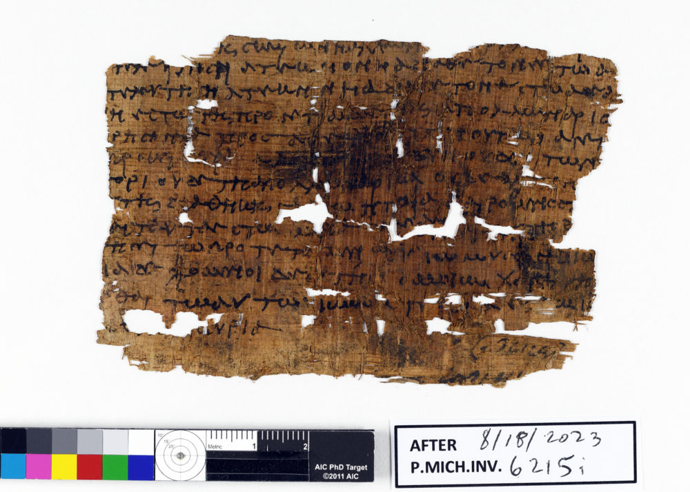
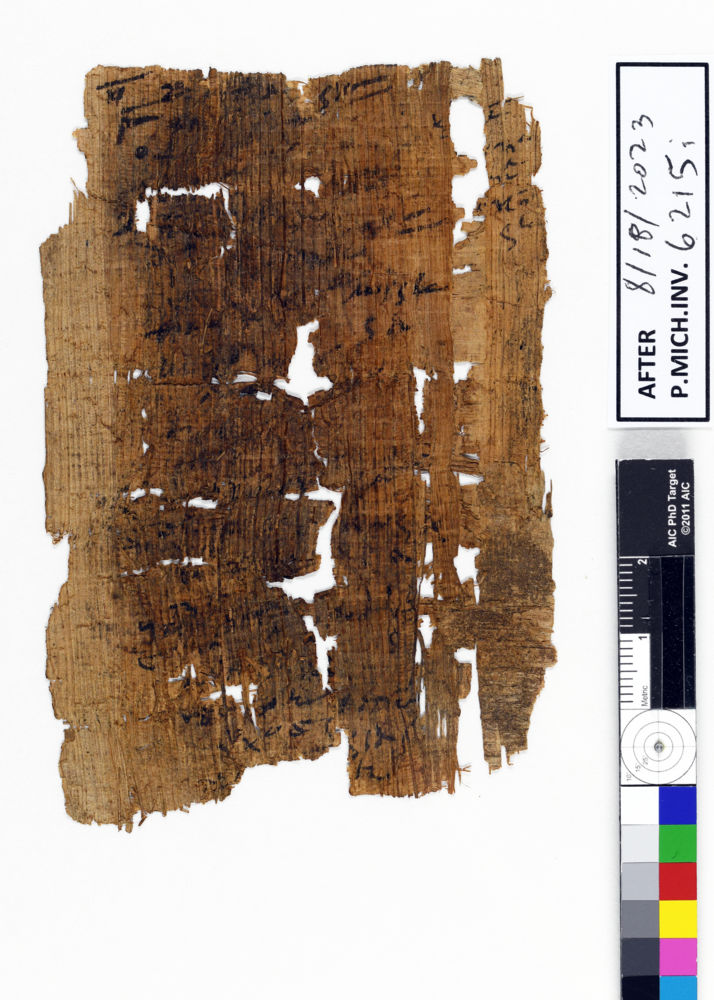

Study 01f · 11 October 2026P.Mich. inv. 6215i / two forms of sequence
The verso is not the after
The edition describes a reused side of this papyrus. The card in its photograph says “AFTER 8/18/2023.” The first is a historical reading of the sheet; the second is a modern note whose reference is unstated.
The recto and verso are shown in the article's orientations, independently fitted. The turned view is evidence about the published photograph and written surface, not a measured rotation between frames.
01 / RectoFig. 1

Whole published photographWill / primary writing
02 / VersoFig. 2

Same sheet / other sideAccount / reused writing
Article's readingRecto
A local Greek will
The date is lost. The authors place it in the second half of the second century CE by paleography.
The lower blank space contains two lines in a different hand, which the authors say seems to match the verso.
Article's readingVerso
Turned and reused
The verso was turned 90 degrees and reused for another document written against the fibers. From the surviving traces, the authors describe it as a day-to-day account with amounts in drachmas.
Its margins suggest that the sheet was cut for reuse. The hand does not look later than the second century.
Photograph labelModern note
“After 8/18/2023”
The edition thanks conservator Marieka Kaye for conservation and temporary photographs on which it is based. It does not define this card's “AFTER” relative to that acknowledgment or say what its date marks. The ancient reuse and the modern note occupy the same frame, but the sources do not join their timelines.
The sheet has two written uses that the authors can read from its sides, scripts, and margins. In the photograph, a newer card adds a date and a word but no named event. I can show both records together without making them tell one story.
The 2023 date string is not the date of the papyrus. The ancient reuse is not an explanation for the modern “after.” That separation is the work's hinge.
Text and fig. 1–2: Maria Nowak and W. Graham Claytor, “A Local Will with a ‘Codicillary’ Clause,” Pylon 4 (2023), especially §1 and §2. Images courtesy of the University of Michigan Library Digital Collections; CC BY-NC-SA 4.0. Article ↗ · Full text PDF ↗
Images retained in their published orientations and independently fitted; no image color-corrected. Interpretive language follows the article; margin-based cutting remains a suggestion in the source.